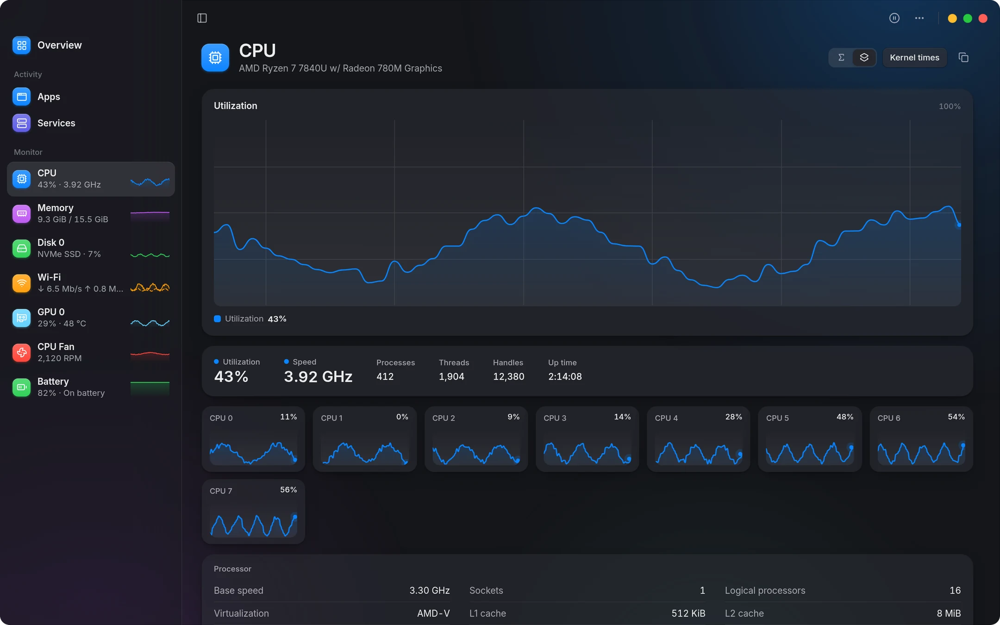
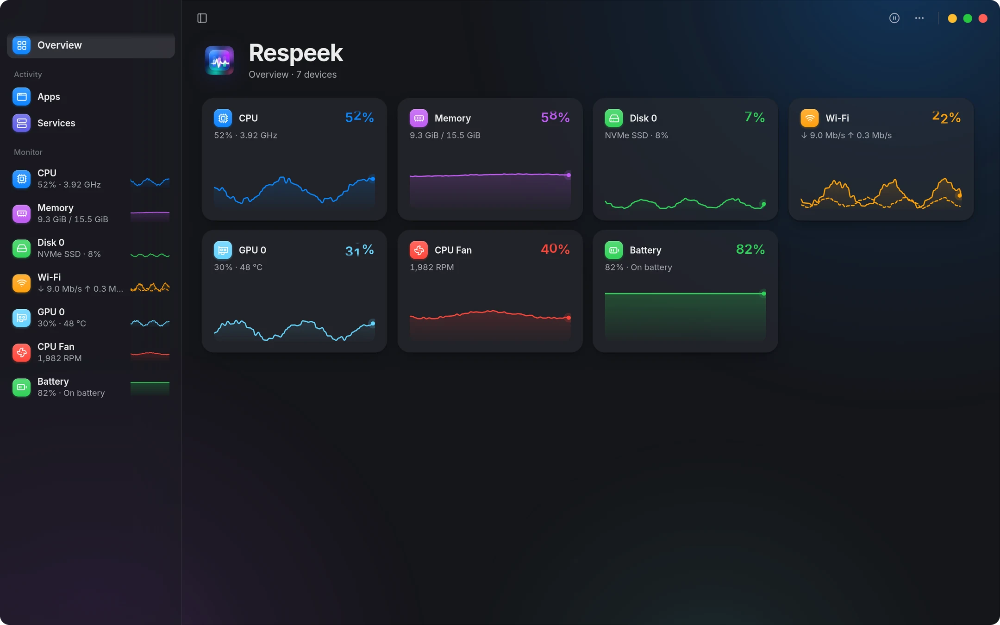
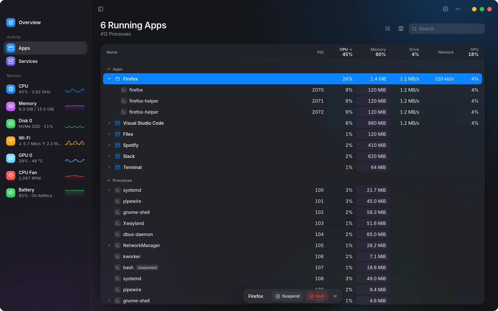
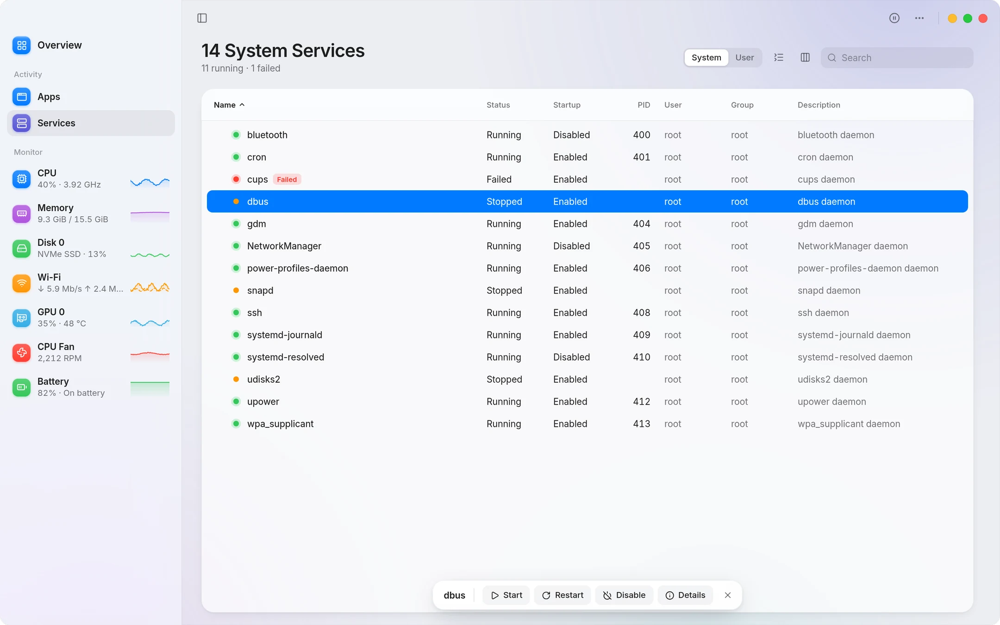
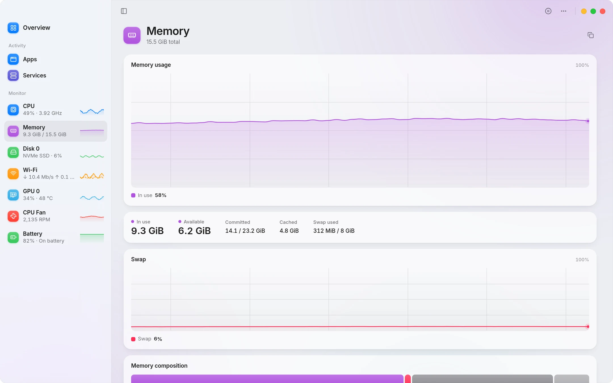
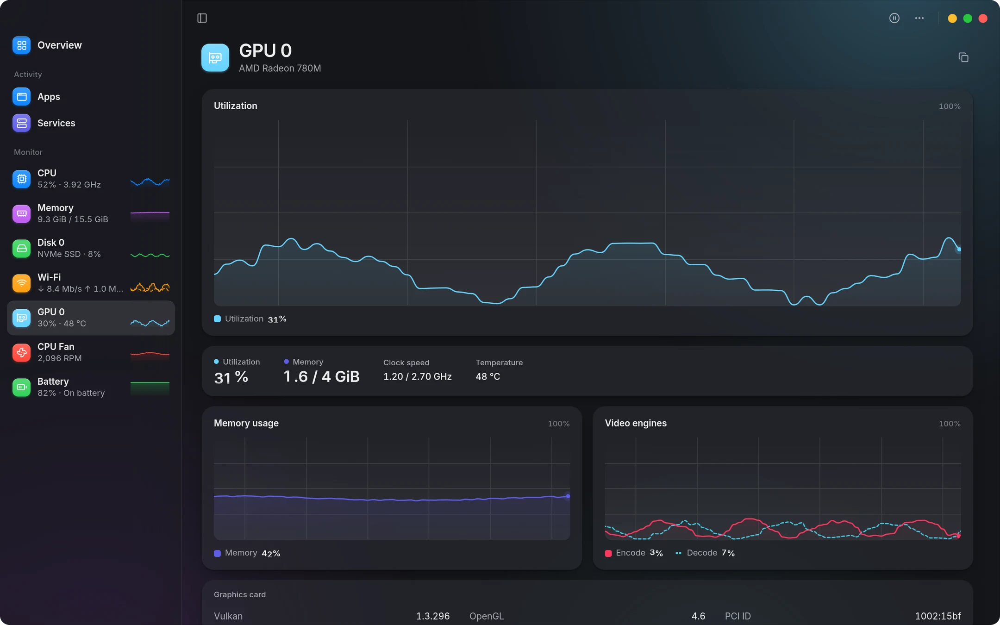
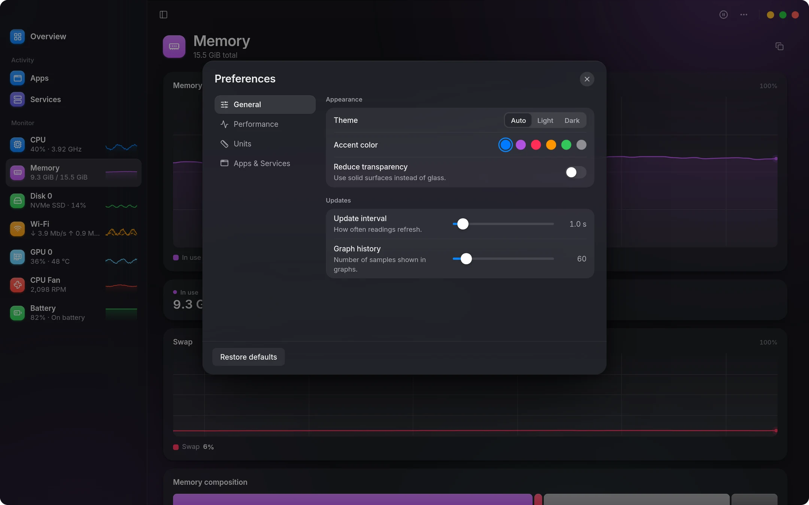
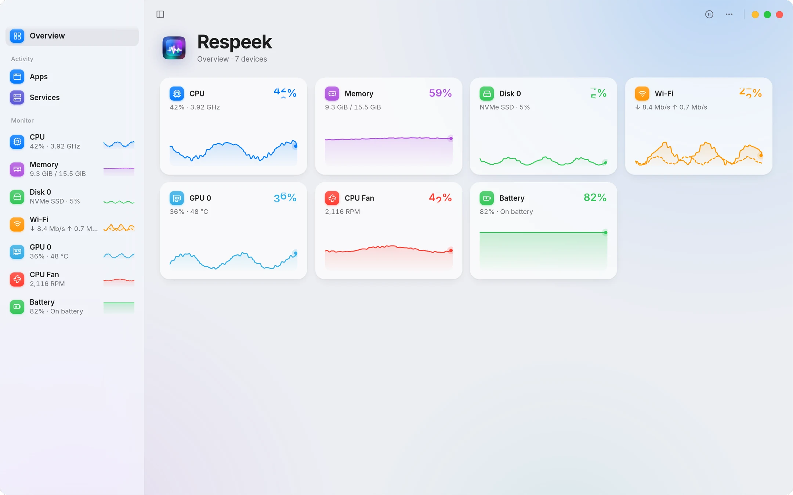

Performance that breathes.
Graphs glide between samples on the GPU instead of ticking. Overall or per‑core CPU, kernel time, clocks, caches, temperatures and power draw.

See everything your computer is doing.
Beautifully.
A fluid, glass-clear system monitor for Linux. CPU, memory, disks, network, GPUs, fans and batteries — plus every app, process and service — in an interface that moves like it means it.

Page transitions measured frame-by-frame in the real window.
CPU for the Rust shell at idle, measured on a 1-second refresh.
Of the logic in Rust. The interface only draws what the core sends.
Nothing leaves your machine. Ever.
Everything, at a glance
Graphs glide between samples on the GPU instead of ticking. Overall or per‑core CPU, kernel time, clocks, caches, temperatures and power draw.

Apps grouped with their processes, heat-tinted columns, instant search, and a floating action bar to suspend, resume or quit.

Start, stop, restart, enable or disable systemd services — and read their logs — without a terminal.

See what's in use, modified, on standby and free — and which modules sit in which slots.

Integrated and discrete. Utilization, VRAM, encoders, clocks, power, PCIe link and API versions.

Light or dark, six accents, reduce transparency, units in bits or bytes, base 2 or 10. Drag devices to reorder the sidebar.

Designed to disappear
Translucent materials over a soft colour field that follows the device you're looking at. Critically damped springs everywhere. Drag the divider — it follows your hand, carries your momentum, and resists at the edges.

Feedback starts on pointer-down. Nothing waits for a click to finish.
Every transition can be redirected mid-flight. Pages rise; the old one simply fades.
Blur only where layers truly overlap. Solid fallbacks when you ask for less transparency.
Reduced motion swaps slides for cross-fades. High contrast gets real borders.
Under the hood
Respeek pairs a battle-tested Rust gatherer with a single Rust core that makes every decision — sorting, search, units, the app tree. The interface just renders.
Reads /proc, sysfs, udisks, NVML and systemd. Smart polling: expensive sensors back off when they're off-screen.
Sampler, history, formatting, the app/process tree, search and sort — tested and typed.
A thin bridge. Commands run off the UI thread; snapshots stream over one channel.
Glass, springs and GPU-slid canvases. No data processing, ever.
.deb for Ubuntu, Pop!_OS and Debian · AppImage for any x86-64 Linux.
git clone --recursive https://github.com/jeevansai-k/respeek
cd respeek && npm install
./scripts/build-magpie.sh
cargo tauri build